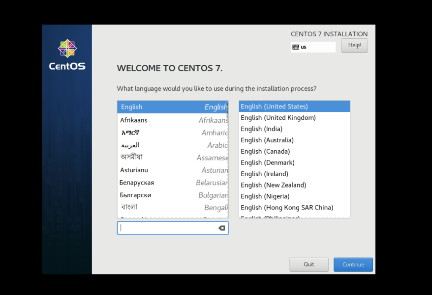
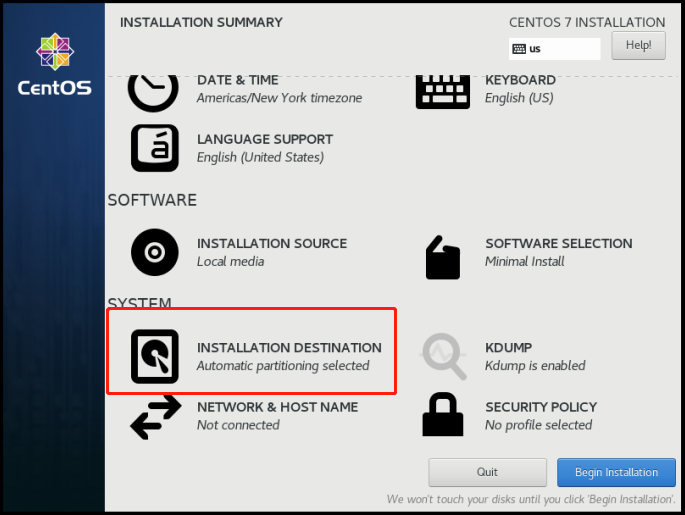
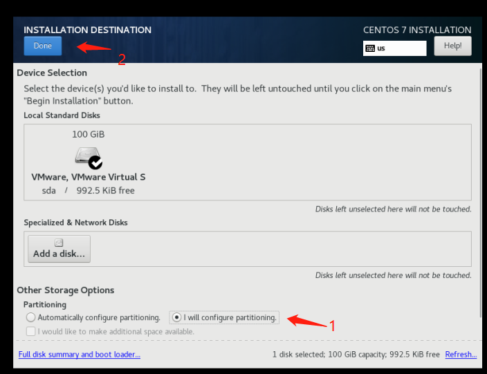
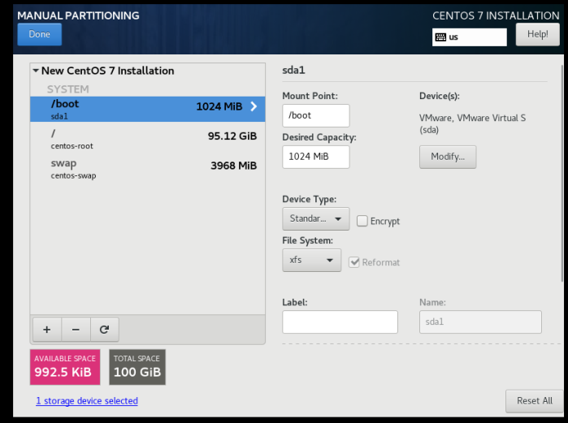
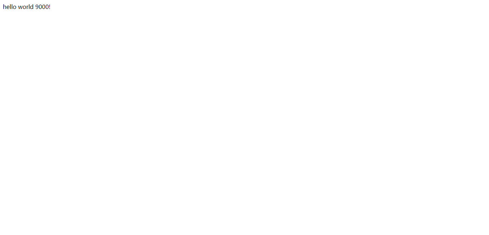
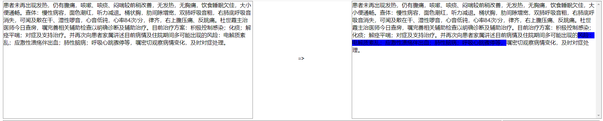
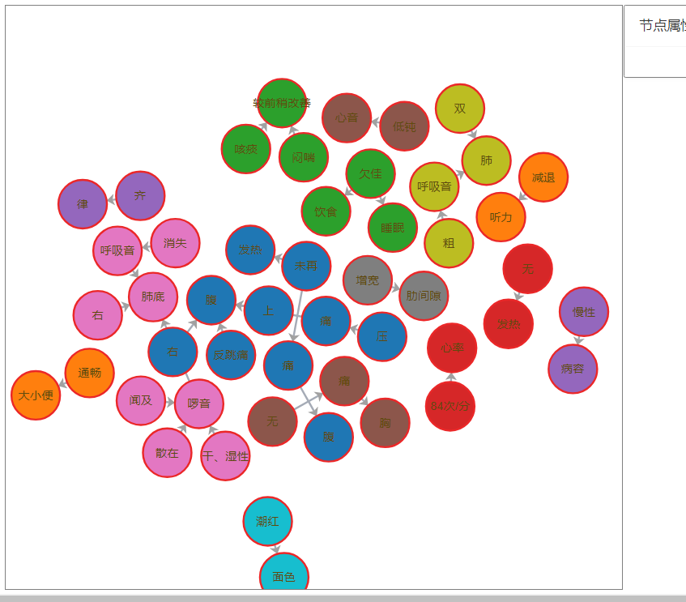

nlp服务部署手册（LINUX）
整体流程
- 安装Centos7-base
- 无网络安装docker
- 导入镜像、设置运行环境
- 启动NLP模型容器及服务
- 启动缓存、测试及指标管理服务
具体步骤
1. 安装Centos7-base
百度云盘 centos7镜像链接
提取码：66if
选择centos7的一个稳定版本，安装的时候注意的问题：
- 语言选择英文：
 - 选择最小安装

- 硬盘空间分配不要使用默认配置，除了基础的启动和swap，将剩余所有空间挂载到根目录下



2. 无网络安装docker
服务所使用的docker文件为docker-19.03.5.tgz
解压
sudo tar zxvf docker-19.03.5.tgz解压之后生成一个docker文件， 将docker文件中的内的文件复制到/usr/bin目录下
sudo cp docker/* /usr/bin/拷贝过去的文件需要执行权限
sudo chmod +x /usr/bin/docker* sudo chmod +x /usr/bin/containerd* sudo chmod +x /usr/bin/ctr sudo chmod +x /usr/bin/runc补充服务文件，并添加权限
vim /etc/systemd/system/docker.service chmod +w docker.service chmod +x /etc/systemd/system/docker.service写入的内容
[Unit] Description=Docker Application Container Engine Documentation=https://docs.docker.com After=network-online.target firewalld.service Wants=network-online.target [Service] Type=notify # the default is not to use systemd for cgroups because the delegate issues still # exists and systemd currently does not support the cgroup feature set required # for containers run by docker ExecStart=/usr/bin/dockerd -H tcp://0.0.0.0:2375 -H unix://var/run/docker.sock ExecReload=/bin/kill -s HUP $MAINPID # Having non-zero Limit*s causes performance problems due to accounting overhead # in the kernel. We recommend using cgroups to do container-local accounting. LimitNOFILE=infinity LimitNPROC=infinity LimitCORE=infinity # Uncomment TasksMax if your systemd version supports it. # Only systemd 226 and above support this version. #TasksMax=infinity TimeoutStartSec=0 # set delegate yes so that systemd does not reset the cgroups of docker containers Delegate=yes # kill only the docker process, not all processes in the cgroup KillMode=process # restart the docker process if it exits prematurely Restart=on-failure StartLimitBurst=3 StartLimitInterval=60s [Install] WantedBy=multi-user.target添加服务到系统，并启动
systemctl daemon-reload systemctl start docker systemctl enable docker.service systemctl status docker sudo docker versiondocker 解决容器内访问宿主机“No route to host”的问题,修复方式请顺序运行以下命令：
nmcli connection modify docker0 connection.zone trusted systemctl stop NetworkManager.service firewall-cmd --permanent --zone=trusted --change-interface=docker0 systemctl start NetworkManager.service nmcli connection modify docker0 connection.zone trusted systemctl restart docker.servicedocker服务安装好以后，可能会存在不生效的情况，
有一种导致这种情况的原因是某些系统配置没有加载，可以尝试重启服务器（重启之前联系网管看一下）
3. 导入镜像、设置运行环境
NLP整体服务有两个镜像：
- 一个是深度学习的模型推理镜像
- 一个是缓存和接口服务
上传文件于服务器，然后导入，导入命令：
docker image load -i 镜像文件路径4.启动NLP模型容器及服务
设置端口等，启动容器
SSH_PORT=6522 BT_PANEL=6588 BT_PANEL_PORT=6589 NRE_SERVICE_PORT=6500 YG_SERVICE_PORT=6501 GRAPH_DEBUG_API_PORT=6502 GRAPH_DEBUG_WEB_PORT=6503 OFR_API_PORT=6504 OFR_WEB_PORT=6505 docker run -idt --name nlp_server_simple -p $SSH_PORT:22 -p $BT_PANEL:8888 -p $BT_PANEL_PORT:888 -p $NRE_SERVICE_PORT:5000 -p $YG_SERVICE_PORT:5001 -p $GRAPH_DEBUG_API_PORT:5002 -p $GRAPH_DEBUG_WEB_PORT:5003 -p $OFR_API_PORT:5004 -p $OFR_WEB_PORT:5005 nlp_server_simple:v0.2 /bin/bash进入容器
docker exec -it nlp_server_simple /bin/bash依次启动服务
# 启动 nginx service nginx restart # 启动 NER NRE # 1. 加载python环境 source /home/nlp/nlp_service_v1.1_model_date_20180815_v2/venv/bin/activate # 2. 结点1 cd /home/nlp/nlp_service_v1.1_model_date_20180815_v2 uwsgi -c uwsgi_socks.ini # 3. 结点2 cd /home/nlp/nlp_service_v1.1_model_date_20180815_v2_bak uwsgi -c uwsgi_socks.ini # 2. 启动超范围服务 source /home/nlp/nlp_service_v1.1_model_date_20180815_v2/venv/bin/activate cd /home/cfw/server/ uwsgi -c uwsgi.ini测试浏览器打开
- ip:6500
- ip:6501

5. 启动缓存、测试及指标管理服务
- 启动容器
docker run --name=gqlserver -dit --privileged=true -p 9180:9180 -p 5432:5432 gqlserver:2.0 /usr/sbin/init - 进入容器
docker exec -it gqlserver bash - 修改配置文件
修改的部分：vim /opt/apache-tomcat-9.0.27/conf/application.propertiesspring.datasource.master.driver-class-name=org.postgresql.Driver spring.datasource.master.jdbc-url=jdbc:postgresql://[服务器IP]:5432/nlp spring.datasource.master.username=nlp spring.datasource.master.password=nlp - 启动tomcat
/opt/apache-tomcat-9.0.27/bin/startup.sh - 在浏览器上输入：[服务器IP]:9180/nlp
- 院感默认用户：yg 密码：1
- 点击系统参数，修改对应服务的IP地址和端口
- 点击GQL查询， 输入一段病历
NLP解析效果：

